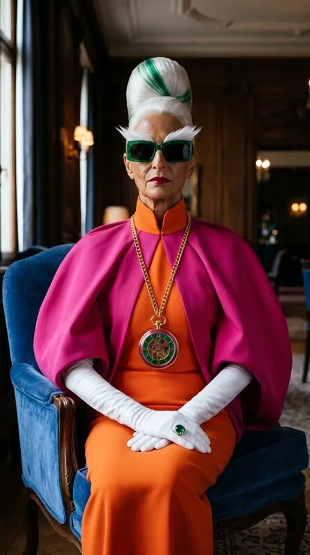
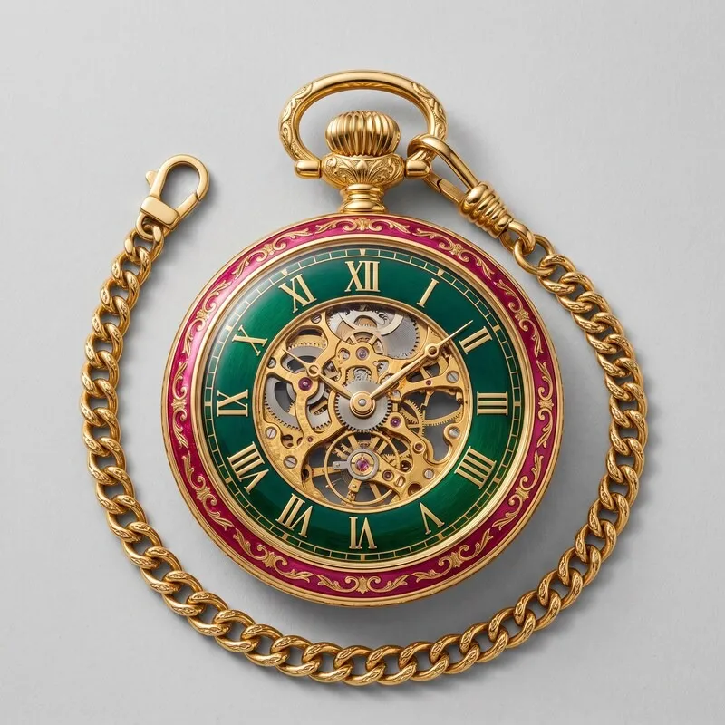
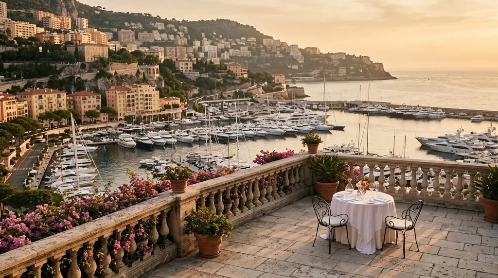
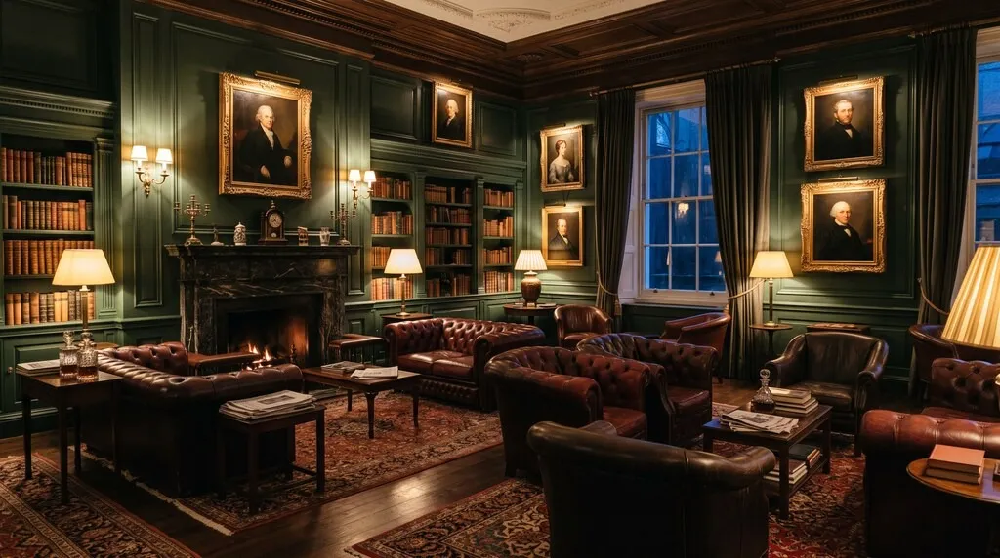
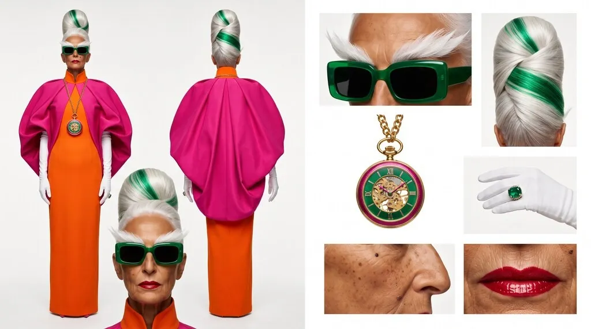
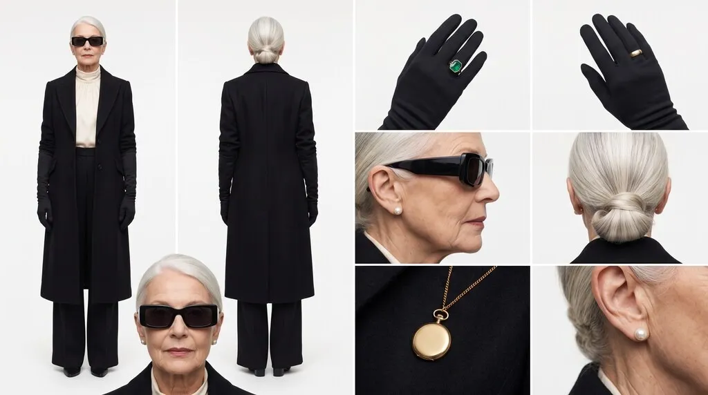
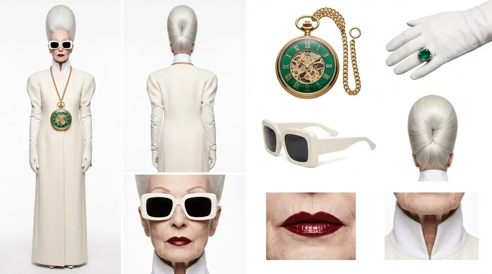

00:00:01:00Art · AI influencer & content system
Helena von Arx
An AI influencer designed from scratch — a 75-year-old Swiss woman you recognise in a thumbnail — and the content system that turns a short brief into a new post.
- Category
- AI influencer & content system
- Year
- 2026
- Client
- Helena von Arx (fictional character)
- Type
- Concept
- Role
- Character design, creative direction, AI pipeline
- Tools
- Magnific Spaces, Google Nano Banana 2.1, Gemini Flash






01 / 07
A character and the machine around her: everything that makes Helena recognisable is locked, so each new post is a few lines of brief away.
Brief
Helena von Arx is an AI influencer I designed from zero: a 75-year-old Swiss woman who lives between Zürich, Monaco and St. Moritz. The brief I set myself: a character strong enough to carry an account on her own, and a system that turns a few lines of brief into a new post without her changing from one image to the next.
Challenge
A character has to be recognisable before anyone reads the caption, and an image model has to draw her the same way every time. Most of the work was deciding what makes her Helena — and writing it down so precisely that a model can't get it wrong.
The idea
Lock everything that makes her Helena. Change one thing per post — a short brief — and let the system do the rest.
Process
- 01
Character
Three passes at the character sheet, from a quiet classic lady to an elongated silhouette in saturated colour blocks — feather-white eyebrows, an emerald streak, emerald glasses. Then a hero portrait to fix her face.
- 02
Visual bible
A written description of what never changes — body, face, signature pieces, colour rules — and a "never" list. Pale skin, bare hands, beige, smiles and logos are out.
- 03
Signature objects
A saucer-sized gold pocket watch, always on her chest, and a crystal tumbler of an unnamed, almost black red drink that waiters bring and she never orders.
- 04
Locations
Eight places written once, each with its own light — Zürich, Geneva, St. Moritz, London, Monaco, New York, Dubai and Lake Como.
- 05
The post
A brief with pillar, location, action, outfit, watch, drink and framing. An LLM prompt writer combines it with the bible and the references and writes the image prompt; the 9:16 still comes out the other end. The line of copy goes in at the edit, never in the image.
The system
Five panels, one brief
The first three panels are her identity and never change between posts. The fourth is the brief, the only thing I edit. The fifth writes the prompt and makes the image.
01 Identity

Helena — Character sheet02 Objects & places
The drink03 Brief
Pillar · location · action · outfit · watch · drink · framing
Post briefBrief + visual bible + references → one image prompt
Prompt writer04 Post
Still — 9:1601 · Finding Helena
Three sheets to a silhouette
The first two versions were elegant and forgettable. The third pushes everything — height, eyebrows, hair, colour — until she reads as Helena from across the feed.


02 · Signature objects
The watch and the drink
Two objects that show up in every story. The watch is always on her chest; the drink only appears when the brief asks for it, and nobody ever says what it is.
03 · Locations
Where she lives
Eight places, each with a fixed description and light, so the same room looks the same in every post. These three are already rendered.
04 · One post
From brief to still
The brief for the first post, as written in the board:
Pillar — Image as an asset. Location — her Zürich apartment. Action — she sits upright on the edge of the cream sofa and lowers her emerald sunglasses with one gloved finger, looking straight into the camera. Outfit — a cobalt-blue cape with a stiff high collar over a saffron-yellow column dress. Drink — yes, untouched on the side table. Framing — waist up, 9:16. Light — soft grey afternoon.
Line added in the edit — "Appearance is the first negotiation."
Deliverables
- Character sheet and hero portrait
- Visual bible with fixed traits and a "never" list
- 2 signature objects — the watch and the drink
- 8 written locations, 3 of them rendered
- A post brief template and a prompt writer that turns it into a still
- First post — a 9:16 still for stories and reels
Credits
- Character, creative direction & AI pipeline
- Lautaro Ferrandi
- Image model
- Google Nano Banana 2.1 (via Magnific)
- Prompt writer
- Gemini Flash (via Magnific)
Next in ArtVJ / Real-time visuals
Pink Mountains →